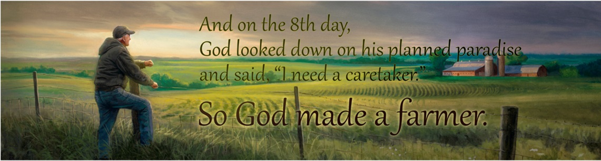

Displaying a manual slideshow with W3.CSS is very easy.
Just create many elements with the same class name:
And add a JavaScript to select images:
To display an automatic slideshow is even simpler.
You only need a little different JavaScript:
The slides do not have to be images.
They can be any HTML content:
Add a caption text for each image slide with the w3-display-* classes (topleft, topmiddle, topright, bottomleft, bottommiddle, bottomright, left, right or middle):
An example of using buttons to indicate how many slides there are in the slideshow, and which slide the user is currently viewing.


An example of using images as indicators:
To operate multiple slideshows on one page, you must class the members of each slideshow group with different classes:
Slide or fade in an element from the top, bottom, left or right of the screen with the w3-animate-* classes.
The w3-animate-fading class fades an element in and out (takes about 10 seconds).